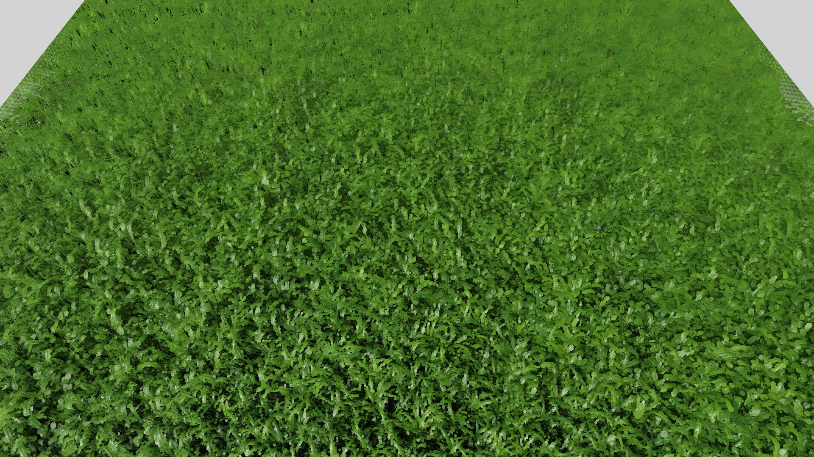
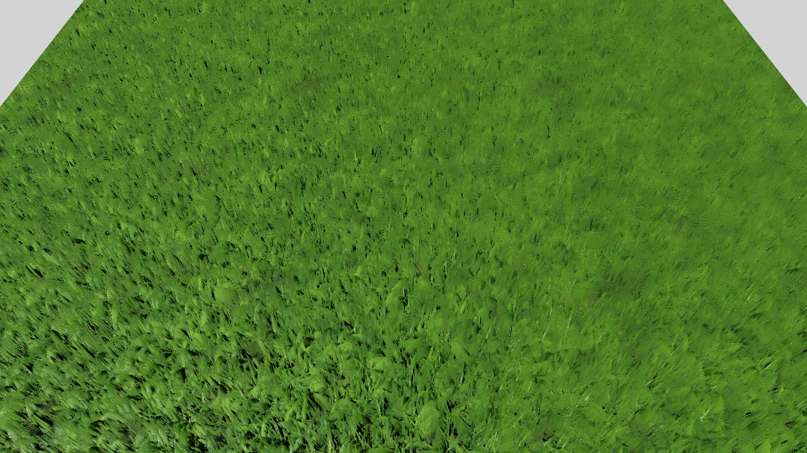
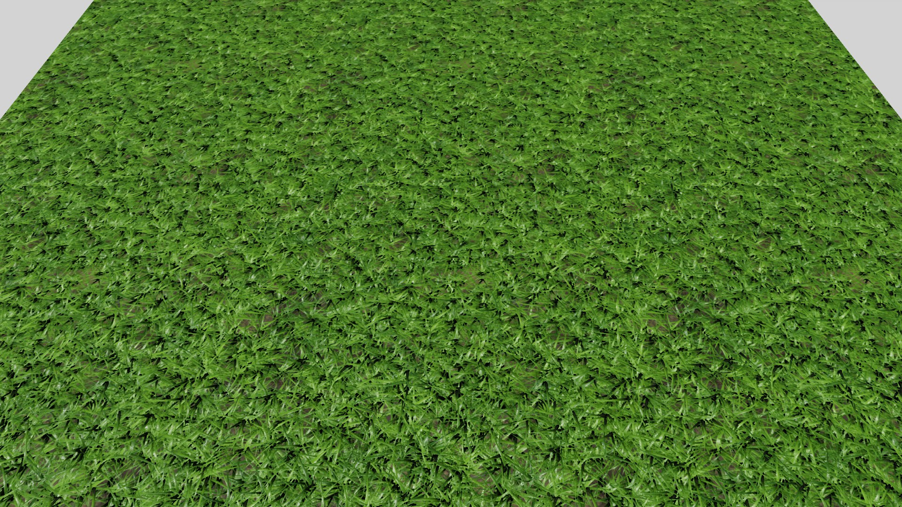
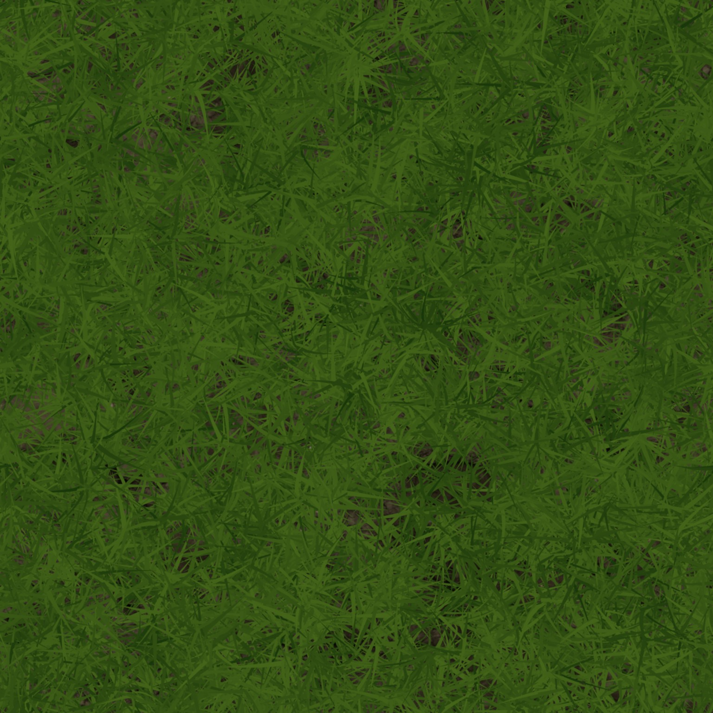
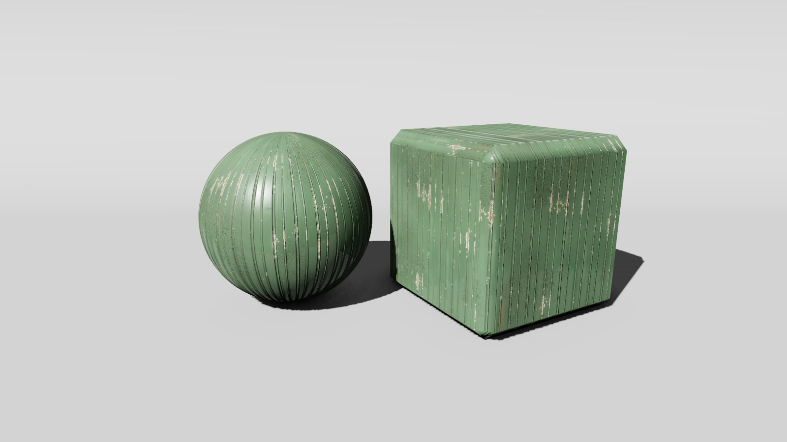
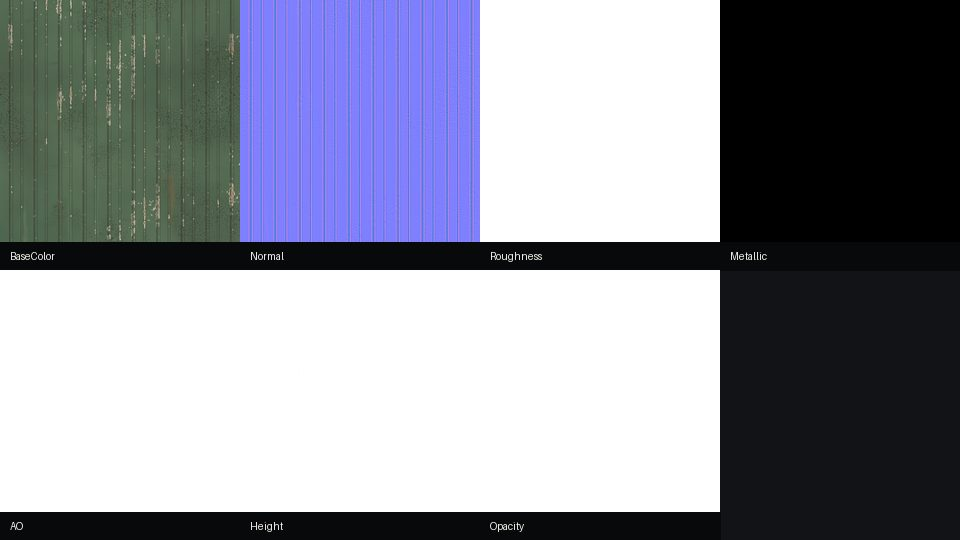

Materials, relief surfaces, and props authored in Aether and rendered through the game engine. Hover a material to see its exported PBR maps; open any work for the full pair.
Rendering study · Grass Meadow
Surface detail in Plush
Compare the same surface from a fixed camera in Plush, then inspect the orthographic maps captured by Aether.




Flat PBRPOMSurfels + POM
Drag the dividers on the image, or use the arrow keys when a divider is focused. Tabs show each view on its own.
From Aether to Plush
Aether captures the meadow orthographically into base color, tangent-space normal, roughness, metallic, ambient occlusion, opacity and physical height maps. The flat view shades those maps on the host surface. POM traces the height field in the shader and offsets the map coordinates to suggest depth at an angle.
For near-field relief, Aether also captures eight depth slices, including coverage, height and shading data. It compiles those captures into clustered surface samples. Plush culls and draws the samples as surfels close to the camera, transitioning to the POM host farther away. The surfel view shows that combined runtime path, rather than the original grass geometry.
Coverage from the eight depth slices used for near-field compilation.
Material study
Beadboard wainscot
This painted beadboard is built as a one-metre repeating surface. The construction includes the board profiles and joints, cupping, nail holes, raised grain and damage to the paint layers.
The material captures a green top coat over older cream paint and exposed wood, with wear and grime responding to the surface structure. The images show the material in Plush and the maps exported from Aether.

Beadboard wainscot in Plush.

Exterior materials
18 works
Interior materials
18 works
Near-field relief
2 works
Props
2 works
Procedural variations · 36 studies
Aether material variations. These previews show the exported base-color maps; hover or tap to inspect the map sets.